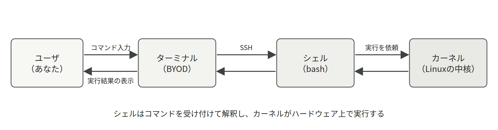
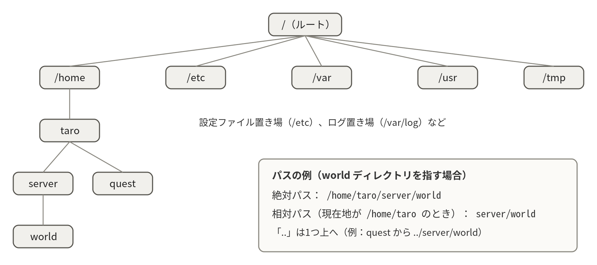
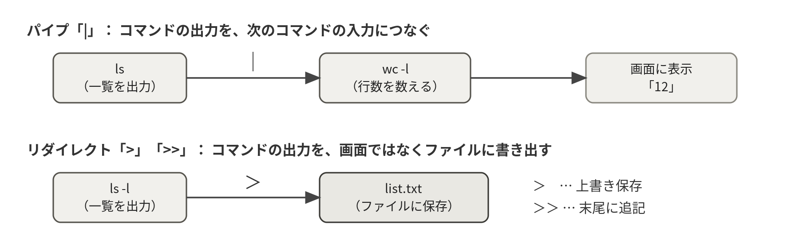
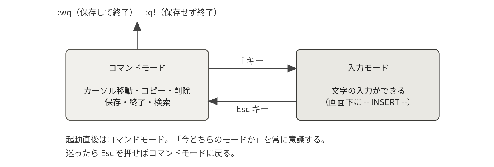

Raspberry PiにOSを導入し、手元のPCからSSHで遠隔操作できるLinuxサーバを構築する。基本コマンドの演習（演習1）をすべて完了する。
タイムテーブル（180分）
| 時間 | 内容 |
|---|---|
| 30分 | ミニ講義：Linuxとは／サーバとは／完成形のデモ |
| 40分 | 起動・初期設定（ユーザ作成・Wi-Fi・ホスト名）・SSH接続 |
| 70分 | コマンド操作演習（演習1） |
| 30分 | viエディタ基礎と答案の提出 |
| 10分 | 確認項目の達成チェック・振り返り |
この回の流れ
- Linuxの全体像をつかむミニ講義 30分
- サーバを初期設定するモニタをつないでローカル作業
- SSHで接続する以降はBYODだけで操作
- ディレクトリとパスを知る迷子にならないための地図
- 基本コマンドを試すまずは実際に打つ
- 演習1に挑戦する70分
- viで答案を作って提出30分
1-1Linuxの基礎知識
Linuxとは
Linuxは、当時大学生であったリーナス・トーバルズ氏らによって開発されたOS（オペレーティングシステム）である。オープンソースとして誰もが無償で入手・利用できることから広く利用されており、世界中のサーバの大半、Android、そして本実習で使うRaspberry PiのOSもLinuxをベースにしている。これから皆さんが構築するLuantiサーバも、世の中のゲームサーバやWebサービスと同じくLinuxの上で動く。
ディストリビューション
カーネル（システムの中核）やシェル、各種ツールをまとめたパッケージをディストリビューションという。おもにRed Hat系（Red Hat Enterprise Linux、Rocky Linuxなど）とDebian系（Debian、Ubuntu、Raspberry Pi OSなど）の2系統がある。本実習で使うRaspberry Pi OSはDebian系であり、操作方法はUbuntuとほぼ共通である。（背景は第1章 1-6 ディストリビューション）
カーネル・シェル・コマンド
- カーネル：メモリ・プロセス・ネットワーク・ファイルシステムなど、システムの中核を管理する。
- シェル：カーネルと利用者を仲介するプログラム。コマンド入力を受け付けて実行する。本実習ではbashを使う。
- コマンド：シェルを介して実行するプログラム。数千種類あるが、日常的に使う基本コマンドは50個程度である。
この3つの関係は、これから毎回の土台になる。（背景は第1章 1-4 カーネルとユーザランド、第3章 3-2 シェルは何をしているのか）

1-2サーバのセットアップ（起動とホスト名の設定）
実験用のmicroSDカードには、OS（Raspberry Pi OS Lite 64-bit）だけが書き込まれている。ユーザ・Wi-Fi・ホスト名はまだ設定されていないので、モニタを接続したローカル作業で、次の4つをひとつずつ自分の手で行うところから実験を始めよう。
- 自分のユーザの作成
- Wi-Fiへの接続
- 自分専用のホスト名の設定
- SSHサーバの有効化とタイムゾーン（日本時間）の設定
この初期設定そのものが「サーバを1台立ち上げる」最初の演習である。わからないところがあれば、遠慮なく教員・支援員の先生に聞いてほしい。
初回のみモニタをHDMIで接続して電源を入れる。初回起動では設定ウィザードが始まるので、画面の指示に従ってキーボード配列と自分のユーザ名・パスワードを設定する。続けて、そのままローカルで以下を実行しよう（終わったらモニタを外し、以降の操作はすべてBYODからのSSHで行う）。
※ コード枠の読み方：行頭の $ はプロンプト（入力待ちの記号）を表し、$ 自体は入力しない。$ のない行はコマンドの出力例である。また、コマンド先頭の sudo は「管理者権限で実行する」という意味である（詳しくは第3回で学ぶ）。
いま何をするか：Wi-Fi、ホスト名、SSH、時刻の4点を設定し、再起動して反映させる。ここが終わればモニタは不要になる。
（ウィザード完了後、作成した自分のユーザでログインした状態から）
sudo raspi-config # ① Wi-Fiの設定
sudo raspi-config nonint do_hostname mc-学籍番号 # ② ホスト名の設定（例：mc-24s1234）
sudo raspi-config nonint do_ssh 0 # ③ SSHサーバの有効化（既定では無効）
sudo timedatectl set-timezone Asia/Tokyo # ④ タイムゾーンを日本時間（JST）に設定
hostname -I # ⑤ IPアドレスが出ればWi-Fi接続成功
sudo reboot # ⑥ 再起動して設定を反映※ ホスト名は全員がユニークになるよう、必ず学籍番号を含めること。ユーザ名は英小文字で短く、パスワードは推測されにくい自分専用のもの（他サービスの使い回しは避ける）を設定する。Raspberry Pi OSはSSHサーバが既定で無効なので、③を忘れると次節でBYODから接続できない。タイムゾーンを設定しておかないと、第3回以降に読むログの時刻が日本時間とずれる。つまずいたら遠慮なく教員・支援員の先生に声をかけてほしい。
command not found や $: command not found と出たときは、コード枠の先頭に描かれている $ まで一緒に打ち込んでいないか確かめる。$ はプロンプト（入力待ちの記号）であって、コマンドの一部ではない。また、ウィザードやSSHでパスワードを打つ間は画面に文字も * も出ないが、これは故障ではなく仕様である。そのまま最後まで打ってEnterを押す。
再起動してログインプロンプトに新しいホスト名が表示されたら、モニタを外してよい。ここから先はBYODだけで操作する。うまくいかないときは、遠慮なく教員・支援員の先生を呼んでほしい。
- ログインプロンプトとシェルのプロンプトに、自分で決めたホスト名（
mc-学籍番号）が出ている hostname -IでIPアドレスが1つ以上表示される（表示されないならWi-Fiに繋がっていない）timedatectlの表示がAsia/Tokyoになっている
1-3SSHでサーバに接続する
SSH（Secure Shell）は、ネットワーク越しにサーバへ安全にログインして操作するためのプロトコルである。サーバ管理の最も基本的な手段であり、本実習ではすべての操作をSSH経由で行う。BYODのターミナル（Windowsは「ターミナル」または PowerShell、macOSは「ターミナル」）から以下を実行する。（背景は第7章 7-6 SSHの仕組み）
※ ターミナルの開き方：Windowsはスタートボタンを右クリック→「ターミナル」（見つからなければ検索窓に terminal と入力）。macOSは Cmd+Space を押して「ターミナル」と検索する（アプリケーション→ユーティリティにもある）。黒い画面に文字が打てる状態になればOK。
いま何をするか：手元のBYODから、いま設定したばかりのサーバにネットワーク越しにログインする。ユーザ名 と ホスト名 は自分が決めた値に置き換える。
ssh ユーザ名@ホスト名.local
(例) ssh taro@mc-24s1234.local「ホスト名.local」はmDNSという仕組みによる名前解決で、同じネットワーク内にあるサーバのIPアドレスを知らなくても名前で見つけられる。（背景は第7章 7-3 名前解決：DNSとmDNS）
初回接続時は「Are you sure you want to continue connecting?」と聞かれるので yes と入力する。これは接続先が本物かを確認するSSHの安全機構である。本来はfingerprintを事前に照合してから yes と答えるのが正式な手順である。また、2回目以降の接続で英語の警告（REMOTE HOST IDENTIFICATION HAS CHANGED）が出たときは、そのまま進めず教員・支援員に相談すること。
パスワードを入力してプロンプト（ユーザ名@ホスト名:~ $）が表示されたら接続成功である。パスワードの入力中は画面に何も表示されないが、それが正常である（そのまま打ってEnter）。
ssh: Could not resolve hostname のように名前が引けないときは、.local をやめてIPアドレスで接続する（ssh ユーザ名@IPアドレス）。IPアドレスはサーバ側で hostname -I を実行すれば分かる。BYODとサーバが同じWi-Fiに繋がっているかも合わせて確認すること。
2回目以降に WARNING: REMOTE HOST IDENTIFICATION HAS CHANGED! という大きな警告が出たら、自分で鍵を消して先に進めてはいけない。OSを入れ直した、別の機体に同じホスト名を付けた、といった心当たりがある場合もあるが、通信が横取りされている可能性も示す警告である。必ず教員・支援員に相談すること。
接続できたら、自分のサーバのIPアドレスを確認しておこう。
いま何をするか：サーバに割り当てられたIPアドレスを控える。.local で繋がらないときの代替アドレスになり、実験記録にも残す。
hostname -I
10.20.30.41 ...
ip a # ネットワークインタフェースの詳細を表示※ .localで接続できない場合は、IPアドレスで接続する（ssh ユーザ名@IPアドレス）。IPアドレスはDHCPで自動的に割り当てられるため変わることがあるが、同じネットワークにいる間はほぼ変わらない。困ったときは教員・支援員に申し出ること。
- BYODのターミナルに
ユーザ名@ホスト名:~ $の形のプロンプトが出ている hostname -Iで表示されたIPアドレスを実験記録に控えた- モニタとキーボードを外しても、SSHだけでサーバを操作できる
1-4ディレクトリ構造とパス
Linuxのディレクトリはツリー状に構成される。頂点をルートディレクトリといい「/」で表す。ルート直下にはOSが用意する標準ディレクトリが並ぶ。この並びにはFHSという決まりがあり、どのディストリビューションでもほぼ共通である。（背景は第2章 2-4 ディレクトリ階層の標準（FHS））
| ディレクトリ | 役割 |
|---|---|
/home | 各ユーザのホームディレクトリ。自分の作業場所は /home/ユーザ名 |
/etc | システムやサービスの設定ファイル。第2回以降で頻繁に使う |
/var | ログ（/var/log）など、変化するデータ |
/usr | ユーザが利用するプログラムやライブラリ |
/tmp | 一時ファイル。再起動で消える |
パスには2種類ある。絶対パスはルートから辿る道順（例：/home/taro/quest/map.txt）、相対パスは現在いるディレクトリ（カレントディレクトリ）から辿る道順（例：quest/map.txt）である。「.」はカレントディレクトリ、「..」は1つ上のディレクトリ、「~」は自分のホームディレクトリを表す。「今どこにいるか」が分からなくなったら pwd で現在地を確かめるのが基本である。（背景は第2章 2-5 パスの表現）

1-5基本コマンド
演習に取り組む前に、基本コマンドを確認する。まずは以下を実際に打って動きを確かめること。
| コマンド | 役割 |
|---|---|
pwd | 現在のディレクトリのパスを表示 |
ls（ls -l、ls -a） | ディレクトリの内容を表示（-l：詳細、-a：隠しファイルも表示） |
cd ディレクトリ | ディレクトリを移動（cd のみでホームに戻る） |
mkdir ディレクトリ | ディレクトリを作成 |
touch ファイル | 空のファイルを作成 |
cp コピー元 コピー先 | ファイルやディレクトリ（-r）をコピー |
mv 移動元 移動先 | 移動または名前の変更 |
rm ファイル | ファイルを削除（-r：ディレクトリごと削除。取り消し不可、慎重に！） |
cat ファイル | ファイルの内容を表示 |
less ファイル | ページ送りで表示（qで終了、/文字列 で検索） |
head / tail ファイル | 先頭／末尾を表示（tail -f でリアルタイム監視。第3回で活躍） |
find パス -name 名前 | ファイルを検索 |
grep 文字列 ファイル | 文字列を含む行を検索（-r：ディレクトリ以下を再帰的に検索） |
wc -l ファイル | 行数を数える |
シェルの便利機能
- タブ補完：入力途中でTabキーを押すと、コマンド名やファイル名が自動補完される。2回押すと候補一覧が表示される。長いファイル名は補完を使って正確に入力するとよい。
- コマンド履歴：↑キーで過去のコマンドを呼び出せる。Ctrl+Rで履歴を検索できる。
- パイプ「
|」：コマンドの出力を次のコマンドの入力につなぐ。例：ls | wc -l（ファイル数を数える）。 - リダイレクト「
>」「>>」：コマンドの出力をファイルに書き出す（>：上書き、>>：追記）。例：ls -l > list.txt。
パイプとリダイレクトは、第3回以降のログ調査で毎回使う道具である。（背景は第3章 3-5 標準入出力とリダイレクト、第3章 3-6 その他の便利機能）

1-6演習1：基本コマンドによるファイル探索
教員が用意した演習用ファイルをサーバにダウンロードして展開すると、入り組んだディレクトリ群が現れる。基本コマンドを使って以下の問いに答えよう。答えは次の1-7節の方法で答案ファイルに記録する。
いま何をするか：演習用の圧縮ファイルをサーバにダウンロードし、展開して中に入る。ここから先は自分のホームディレクトリの中だけで作業する。
cd
wget http://（当日指示するURL）/quest.tar.gz # URLから取得
tar xzf quest.tar.gz # 圧縮ファイルを展開（詳細は第4回）
cd quest
cat README.txt # 演習の説明を読む（当日指示するURL） は、そのまま打つ場所ではなく当日に板書・掲示される実際のURLに置き換える目印である。丸括弧ごと置き換えること。tar xzf quest.tar.gz で Cannot open: No such file or directory と出たら、ls で quest.tar.gz が手元にあるか確かめる。ダウンロードが失敗していれば、まず wget の行をやり直す。
ls ~にquest.tar.gzとquestディレクトリの両方があるcd questしたあとpwdが/home/自分のユーザ名/questを返すcat README.txtで演習の説明が読めた
| 問 | 問題 | ヒント |
|---|---|---|
| Q1 | quest ディレクトリの直下に、通常の方法では見えないファイルが1つ隠されている。その名前を答えよ | ls -a |
| Q2 | ディレクトリ群のどこかに treasure という名前のディレクトリがある。その絶対パスを答えよ | find |
| Q3 | mine ディレクトリには1000個のファイルがある。「diamond」という文字列を含むファイルはどれか | grep -r |
| Q4 | library/log.txt は何行あるか | wc -l |
| Q5 | library/log.txt に「ERROR」は何回出現するか | grep -c |
| Q6 | library/log.txt の最後の5行に書かれている文字列を答えよ | tail |
| Q7 | gate/key.txt を treasure ディレクトリの中にコピーしよう（コピーできたことを ls で確認） | cp |
1-7viエディタと答案の提出
サーバの設定変更は「設定ファイル（テキストファイル）の編集」で行うことが多い。UNIX系OSに標準搭載されているviエディタ（Vim）は独特の操作体系だが、どのサーバにも必ず入っているため、基本操作は必ず身につける必要がある。本実習でも今後毎回使う。
ただし、Raspberry Pi OS Liteに標準で入っているのは最小構成のvim-tinyであり、vimtutorが無く、入力モード中に矢印キーを押すと文字化けするなど不便が多い。まず次のコマンドでフル版のVimを導入する（aptについては第2回で学ぶ）。
独習には、Vim付属の公式チュートリアル vimtutor（ターミナルで vimtutor ja、約30分）が優れている。第2回までの宿題として各自実施しておくこと。（背景は第4章 4-1 なぜ今もviなのか）
いま何をするか：使いにくいvim-tinyをフル版のVimに置き換え、付属チュートリアルを起動する。1行目の && は「前のコマンドが成功したら次を実行する」という意味である。
sudo apt update && sudo apt install -y vim # 標準のvim-tinyをフル版に置き換える
vimtutor ja # 公式チュートリアル（約30分。宿題）viにはコマンドモードと入力モードがある。起動直後はコマンドモードであり、文字を入力するには i キーで入力モードに切り替える。Escキーでコマンドモードに戻る。「今どちらのモードか」を常に意識するのがコツである。操作がおかしくなったら、Escを数回押してから :q! で「保存せずに終了」するのが安全な脱出方法である。（背景は第4章 4-2 モードという考え方）
viで「文字を打っているのに入らない」「i や dd が画面に表示されてしまう」のは、ほぼすべてモードの取り違えである。画面最下行に -- INSERT -- が出ていれば入力モード、出ていなければコマンドモードだと覚えておく。迷ったらEscを2、3回押してコマンドモードに戻る。収拾がつかなくなったら :q! と打ってEnterで、保存せずに抜けてからやり直せばよい。ファイルは書き換わらないので、何度失敗しても構わない。

| 操作 | 意味 |
|---|---|
i | カーソル位置から入力モードに切り替え（画面下に -- INSERT -- と表示） |
Esc | コマンドモードに戻る |
:w | 保存（コマンドモードで入力） |
:q ／ :q! | 終了 ／ 保存せずに強制終了 |
:wq | 保存して終了 |
x ／ dd | 1文字削除 ／ 1行切り取り |
yy ／ p | 1行コピー ／ 貼り付け |
/文字列 | 検索（nで次の候補へ） |
gg ／ G | 先頭行へ移動 ／ 最終行へ移動 |
ZZ | 保存して終了（コマンドモードで大文字ZZ。:wq と同じ） |
それでは、演習1の答案を vi で作成しよう。（操作の一覧は第4章 4-3 操作リファレンスにもある）
いま何をするか：viを実戦投入して、Q1からQ7の答えを1つのテキストファイルにまとめる。存在しないファイル名を指定すると、新規ファイルとして開かれる。
vi ~/quest/answer.txt
（iキーで入力モードにして、以下の形式で答えを記入する）
Q1: .hidden_chest
Q2: /home/taro/quest/.../treasure
Q3: ...
（EscキーののちZZまたは:wqで保存して終了）cat ~/quest/answer.txtで、書いたはずの答えがすべて表示される- Q1からQ7まで7行そろっている（
wc -l ~/quest/answer.txtで数えられる） - viを
:q!ではなくZZまたは:wqで終了し、内容が保存されている
確認項目
達成したら日時・実行コマンド・結果を実験記録に残すこと。
- BYODからSSHでサーバに接続できた（接続コマンドと自分のIPアドレスを実験記録に残す）
- 演習1のQ1〜Q7をすべて完了した
- viで作成した答案ファイル
~/quest/answer.txtを提出した（提出方法は当日指示） - LuantiクライアントをBYODにインストールし、起動できることを確認した（注意事項2.5節。第2回の必需品）
- シェルをカスタマイズしてみよう。
~/.bashrcをviで開き、末尾にalias ll='ls -la'を追記してsource ~/.bashrcで反映すると、llと打つだけで詳細一覧が表示される。プロンプトの表示（環境変数PS1）を変えてみるのも面白い。 - 環境変数を調べてみよう。
echo $HOME、echo $PATH、envを実行し、PATHの役割を調べてみよう。「コマンドを打つと何が起こるのか」の理解が深まる。